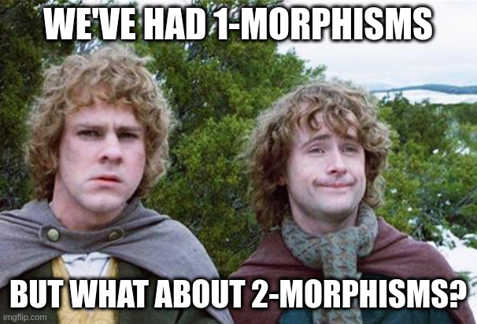

Lecture 7: Natural Transformations

Recap
Before we plunge into natural transformations, let’s briefly review the first six lectures, because it has been a while.
- In lecture 1, we learned about what it means to do formal math, and we we did finite sets in Julia.
- In lecture 2, we learned about morphisms between finite sets, including composition, surjections, injections, and bijections. We then learned about the idea of cardinality; how two finite sets can be isomorphic but not equal.
- In lecture 3, we learned how finite sets and functions between them were a special case of a more general concept: a category. In order to do this, we had to first think about what it means to represent an infinite set in Julia, as a function from
AnytoBool. - In lecture 4, we learned about functors between categories. We implemented a general pattern for functors in Julia, and then implemented a specific functor from the category of finite sets to the category of matrices.
- In lecture 5, we learned about special cases of categories: partially ordered sets (each partially ordered set is a category, and the collection of all partially ordered sets with order-preserving maps is also a category) and monoids (each monoid is a category, and the collection of all monoids is also a category). Associated with these examples we also have a variety of functors; order-preserving maps are functors, monoid homomorphisms are functors, and we have a bunch of different functors between the categories of monoids, sets, and partial orders.
- Finally, in lecture 6 we learned about C-sets. We first learned about finitely-presented categories, i.e. categories generated by a graph. We then showed that we could think about functors out of these path graph categories as databases, and then we implemented on the fly a version of databases based on this model. We finished by talking about graph homomorphisms.
In this lecture, we are going to pick up where we left off last time with graph homomorphisms, and talk about general natural transformations.
Natural transformations
I said before that category theory is unique among mathematics because it is its own metatheory; the collection of all categories forms a category, but the collection of all rings does not form a ring, nor does the collection of all PDEs form a PDE. However, I wasn’t quite telling the truth, because there is actually more structure to the collection of all categories than just a category.
We can not only consider morphisms between categories (i.e. functors), but also morphisms between the functors themselves. We call these natural transformations. More generally, “morphisms that go between morphisms” are also called 2-morphisms, and we call ordinary morphisms 1-morphisms to contrast.
The standard picture for natural transformations is
However, I’ve always thought that this obscured an essential asymmetry to natural transformations, because there is a sense where natural transformations really “live in” \mathsf{D}, not in the abstract space between \mathsf{C} and \mathsf{D}.
A more informative picture is this:
Looking at that picture already gives you half of the definition of a natural transformation, so we might as well go all the way and give the whole definition.
Let \mathsf{C} and \mathsf{D} be categories, and F,G \colon \mathsf{C} \to \mathsf{D} be functors between them. Then a natural transformation \alpha \colon F \Rightarrow G consists of a morphism \alpha_{c} \colon F(c) \to G(c) for every object c \in \mathsf{C}, such the following holds, which is called the naturality condition.
For all c,c^{\prime} \in \mathsf{C} and all f \colon c \to c^{\prime}, the bottom square in Figure 4 commutes. That is, G(f) \circ \alpha_{c} = \alpha_{c^{\prime}} \circ F(f), or in other words, you can follow any path and you get the same result.
This may seem like a big scary diagram, but I want to convince you that this condition is in fact very… natural.
Recall that a graph is a functor into \mathsf{Set} from the category \mathsf{Gr} which has two objects V and E, and two non-identity morphisms \mathrm{src},\mathrm{tgt} \colon E \to V.
Suppose that G_{1} and G_{2} are graphs, and \alpha is a natural transformation between them. Then \alpha consists of two maps: a mapping of edges \alpha_{E} \colon G_{1}(E) \to G_{2}(E) and a mapping of vertices \alpha_{V} \colon G_{1}(V) \to G_{2}(V). The naturality condition for \mathrm{src} can be written as in Figure 5.
What does this mean? Well, if we follow the arrows in one way, this says that if we start with an edge in G_{1}(E), map it over to G_{2}(E) following the homomorphism, and then take its source, we get the same thing as if we started by taking its source and then mapped the source over.
So the naturality condition is precisely that sources and targets of edges are preserved.
If we do Petri nets next, the naturality condition just states that the sources and targets of arcs are preserved.
The plan for the live section of this lecture is to implement natural transformations in Julia building off of the implementation of C-sets that we had last time. But first, let’s give some examples of natural transformations between functors that are not C-sets.
Suppose that f, g \colon \mathbb{R} \to \mathbb{R} are order-preserving functions, i.e. endofunctors on the poset \mathbb{R} considered as a category. Then a natural transformation \alpha \colon f \to g would be a morphism f(x) \to g(x) for every x. As there is at most one morphism f(x) \to g(x), and it exists only if f(x) \leq g(x), there is at most one natural transformation f \Rightarrow g, and it exists only if f(x) \leq g(x) for all x. Thus, the collection of order-preserving maps \mathbb{R} \to \mathbb{R} is itself a poset.
Suppose that G and H are groups, and f,g are functors from G to H when viewed as one-element categories. Then a natural transformation from f to g is a choice of h \in H such that f(x) h = h g(x) for all x \in G. Or in other words, f(x) = h g(x) h^{-1}. If H is abelian (meaning that the multiplication is commutative), then this can only happen if f(x) = g(x). However, if H is non-commutative, then this “conjugation” can be non-trivial.
For instance, suppose that H is the group of 2x2 real matrices, and G is the group of real numbers. Let f \colon G \to H send \theta \in \mathbb{R} to a rotation by \theta, and g \colon G \to H send \theta to a rotation by -\theta. Then if h \in H is the mirror flip around the y axis, f(\theta) = h g(\theta) h^{-1}. I encourage the interested reader to work this out by taking points on the unit circle, and rotating and flipping them in sequence.
Recall in lecture 5 we defined several functors between \mathsf{Mon} and \mathsf{Set}. One of these functors, which we will now call F, sent a set X to the monoid X^{\ast} of strings on the alphabet X (which you can also think of as lists with elements taken from X). Another functor, which we will now call U, sent a monoid M to its underlying set.
We can compose these to get a functor UF \colon \mathsf{Set} \to \mathsf{Set}. We then define a natural transformation \eta \colon 1_{\mathsf{Set}} \to UF, where 1_{\mathsf{Set}} is the identity functor on \mathsf{Set}. For a set X, \eta_{X} sends an element x \in X = 1_{\mathsf{Set}}(X) to the singleton list [x] \in X^{\ast}.
We show naturality by recalling what F and U do on morphisms. Essentially, UF takes a morphism f \colon X \to Y and “maps it” over a list [x_{1},\ldots,x_{n}] to produce [f(x_{1}), \ldots, f(x_{n})]. So naturality of \eta is simply saying that taking the singleton of f(x) and mapping f over [x] give the same result.
(live section now)
Remember, the jupyter notebooks for the live section can be found in the github repository for these lecture notes: Kittenlab.jl.